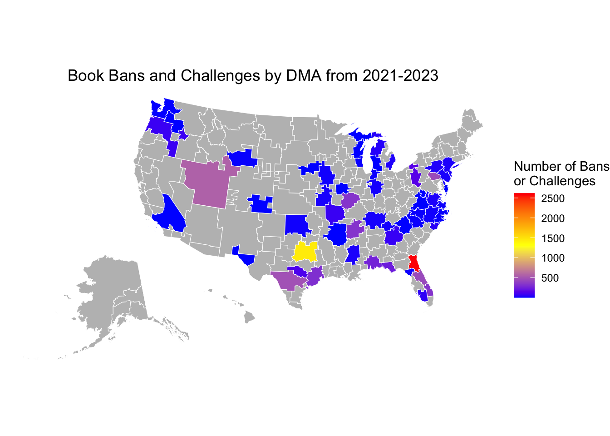
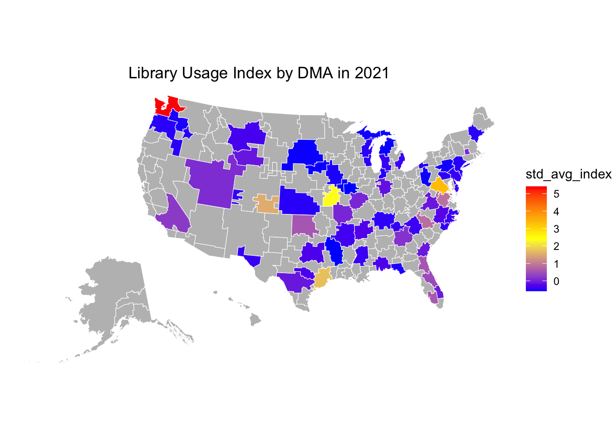
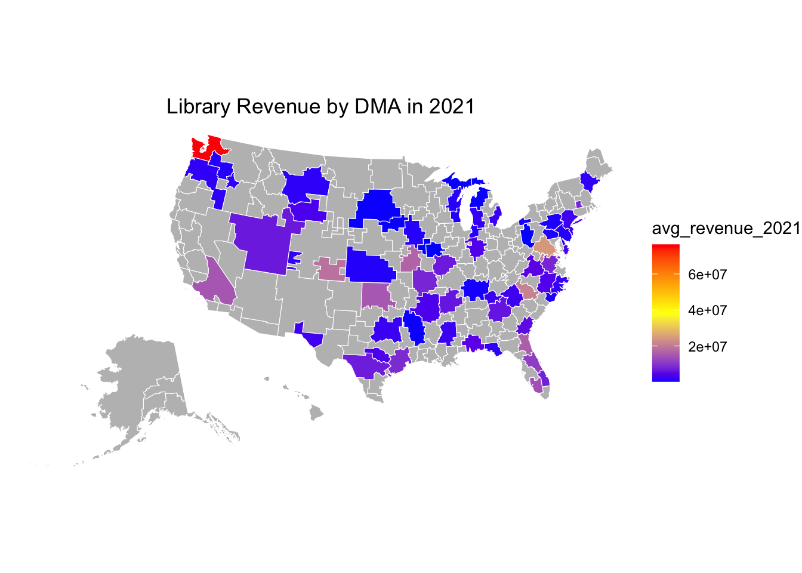
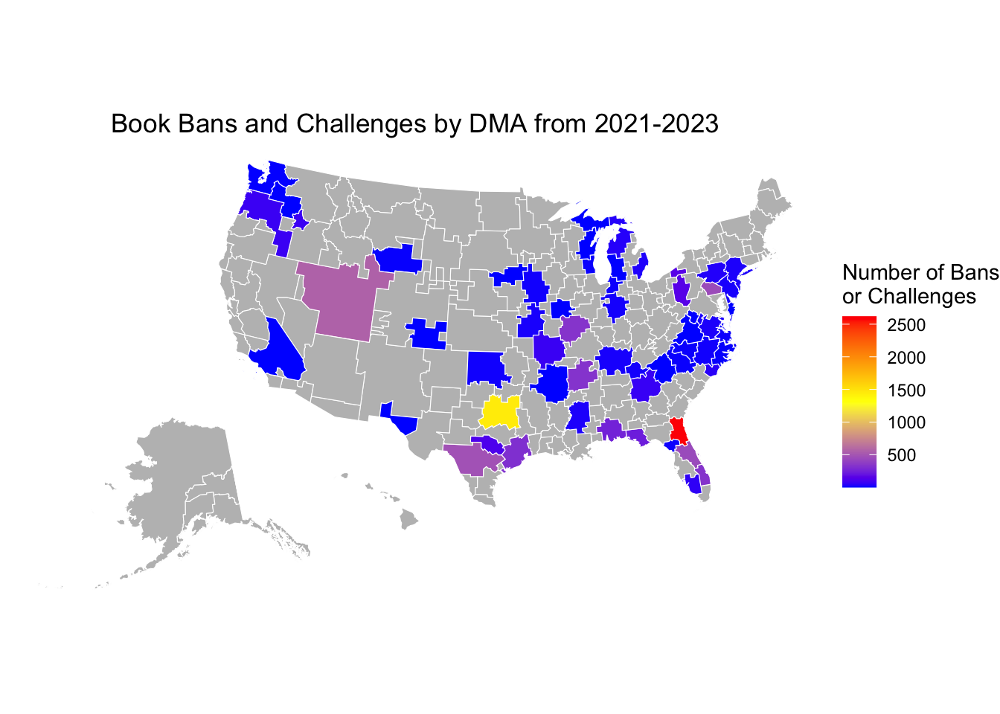
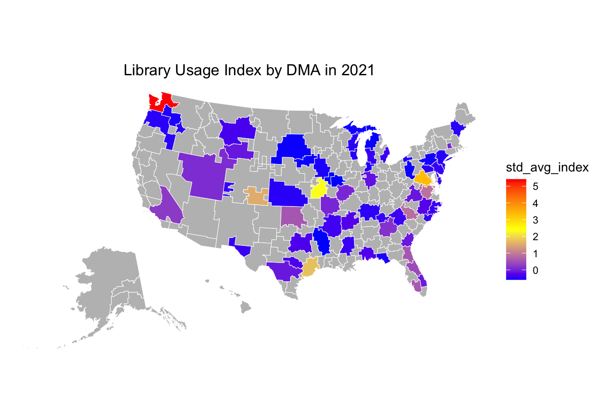
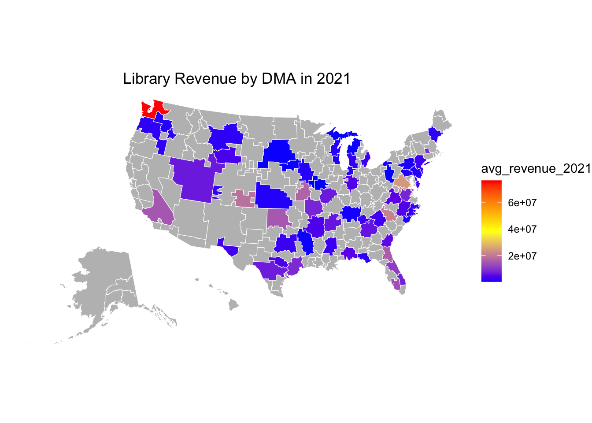

Library Usage in Areas Affected by Book Bans
slkfdjdlsfjlskjf
Public Libraries and Book Bans
public libraries targeted
why public libraries? book bans are usually in school libraries
[Some social theory, look at previous book ban articles]
Data Collection
Google Trends
Data Cleaning



Hypothesis 1:
Table 1:
Call:
lm(formula = avg_revenue_2021 - avg_revenue_2019 ~ tot_count +
tot_pop, data = hits_combined_df_grouped)
Residuals:
Min 1Q Median 3Q Max
-4954146 -1146873 -862109 454080 5282637
Coefficients:
Estimate Std. Error t value Pr(>|t|)
(Intercept) 1.158e+06 2.872e+05 4.032 0.000115 ***
tot_count -2.892e+02 5.351e+02 -0.540 0.590192
tot_pop -5.839e-02 9.010e-02 -0.648 0.518643
---
Signif. codes: 0 '***' 0.001 '**' 0.01 '*' 0.05 '.' 0.1 ' ' 1
Residual standard error: 2175000 on 90 degrees of freedom
(18 observations deleted due to missingness)
Multiple R-squared: 0.01001, Adjusted R-squared: -0.01199
F-statistic: 0.4552 on 2 and 90 DF, p-value: 0.6358Table 2:
Call:
glm(formula = tot_searches_after ~ tot_count + tot_pop, family = Gamma,
data = hits_combined_df_grouped)
Coefficients:
Estimate Std. Error t value Pr(>|t|)
(Intercept) 1.809e-02 7.424e-04 24.360 < 2e-16 ***
tot_count -6.676e-07 1.144e-06 -0.584 0.561
tot_pop -6.603e-10 1.233e-10 -5.357 5.61e-07 ***
---
Signif. codes: 0 '***' 0.001 '**' 0.01 '*' 0.05 '.' 0.1 ' ' 1
(Dispersion parameter for Gamma family taken to be 0.1383012)
Null deviance: 15.018 on 100 degrees of freedom
Residual deviance: 12.570 on 98 degrees of freedom
(10 observations deleted due to missingness)
AIC: 901.15
Number of Fisher Scoring iterations: 5Hypothesis 2:
Table 3:
Call:
lm(formula = avg_hits_next_month - avg_hits_prev_month ~ count +
num_lib_2021, data = hits_combined_df)
Residuals:
Min 1Q Median 3Q Max
-42.411 -13.743 -7.613 7.385 69.135
Coefficients:
Estimate Std. Error t value Pr(>|t|)
(Intercept) 7.859973 1.350441 5.820 1.17e-08 ***
count -0.017517 0.009015 -1.943 0.0527 .
num_lib_2021 0.022744 0.027311 0.833 0.4055
---
Signif. codes: 0 '***' 0.001 '**' 0.01 '*' 0.05 '.' 0.1 ' ' 1
Residual standard error: 22.33 on 418 degrees of freedom
Multiple R-squared: 0.01068, Adjusted R-squared: 0.005942
F-statistic: 2.255 on 2 and 418 DF, p-value: 0.1061Table 4:
Call:
lm(formula = std_avg_index_2021 - std_avg_index_2019 ~ tot_count +
tot_pop, data = hits_combined_df_grouped)
Residuals:
Min 1Q Median 3Q Max
-4.5753 -0.0990 -0.0518 0.0339 1.3651
Coefficients:
Estimate Std. Error t value Pr(>|t|)
(Intercept) 1.179e-02 7.937e-02 0.149 0.882
tot_count -2.259e-05 1.479e-04 -0.153 0.879
tot_pop 3.249e-08 2.490e-08 1.304 0.195
Residual standard error: 0.6013 on 90 degrees of freedom
(18 observations deleted due to missingness)
Multiple R-squared: 0.01876, Adjusted R-squared: -0.003047
F-statistic: 0.8603 on 2 and 90 DF, p-value: 0.4265Table 5:
Call:
lm(formula = std_avg_index_2021 ~ tot_count + tot_pop, data = hits_combined_df_grouped)
Residuals:
Min 1Q Median 3Q Max
-1.6335 -0.5888 -0.4688 0.5020 4.8654
Coefficients:
Estimate Std. Error t value Pr(>|t|)
(Intercept) -2.409e-02 1.353e-01 -0.178 0.8591
tot_count -2.972e-04 2.521e-04 -1.179 0.2415
tot_pop 1.021e-07 4.245e-08 2.404 0.0183 *
---
Signif. codes: 0 '***' 0.001 '**' 0.01 '*' 0.05 '.' 0.1 ' ' 1
Residual standard error: 1.025 on 90 degrees of freedom
(18 observations deleted due to missingness)
Multiple R-squared: 0.06466, Adjusted R-squared: 0.04387
F-statistic: 3.111 on 2 and 90 DF, p-value: 0.0494